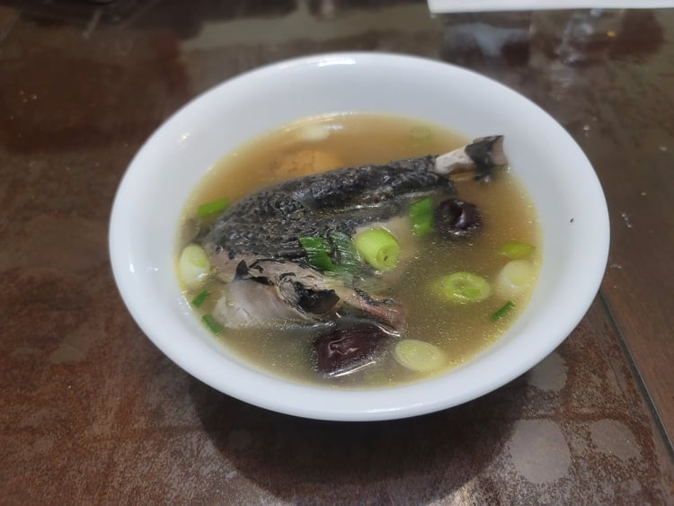

Wū Jī Tāng (Silkie Chicken Soup)

Ingredients:
- 1 whole Silkie chicken, about 2 lb
- 1/3 cup Dried jujubes
- 1 tbsp Dried goji berries
- 4 inch Ginger, sliced
- Optional: 6-8 Shiitake mushrooms, sliced
- Optional: 1 cob Corn, halved
- Water, to fill, about 8 cups
- Salt, to taste
- 2 Scallions, chopped
Instructions:
- Combine all the ingredients into a large pot. Bring to a boil over medium-high heat, then lower to medium-low. Skim the surface for the first 10 minutes to clean up any impurities. Then, simmer covered for 1 1/2 - 2 1/2 hours, or until the chicken is very tender and easily falls off the bones.
- Taste the soup and add salt to taste. Remove from heat and mix in the scallions. Serve hot.